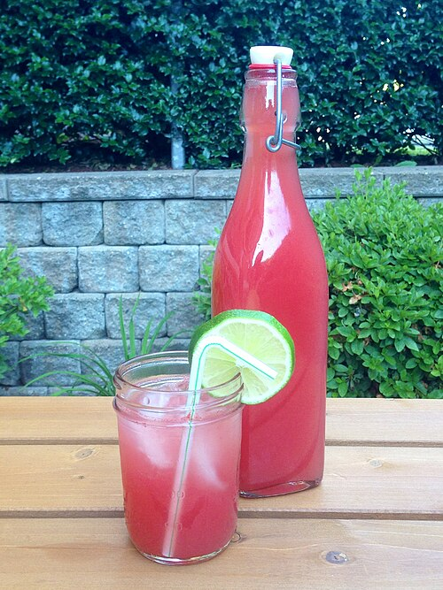

Watermelon Agua Fresca
Watermelon agua fresca is a refreshing Mexican drink made from fresh watermelon, water, and sugar. It is a popular beverage during the hot summer months and is often served at parties and gatherings.
Ingredients
8 servings
- 4 cups cubed seeded watermelon
- ½ cup water
- ½ cup white sugar, or to taste
- 4 slices lime
- 24 fresh mint leaves
- 8 cups ice, or as needed

Image credit: Wikimedia Commons
used under CC BY 2.0
Instructions
- Gather all ingredients.
- Place watermelon and water in a blender; process until smooth. Add sugar to taste.
- Cut lime slices in half; place a half lime slice into each of 8 glasses along with 3 mint leaves. Crush mint and lime with a cocktail muddler to release juice, then fill each glass with 1 cup of ice.
- Pour watermelon agua fresca over ice in each glass; stir before serving.
Back to home page